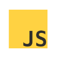

Python
Python jest - według octoverse drugim najpopularniejszym językiem programowania na githubie. Nie jest to nic dziwnego - jest on znany ze swojej prostoty, dzięki której jest doskonałym pierwszym językiem programowania do nauczenia się, jednak pomimo tego posiada wiele zaawansowanych frameworków, dzięki którym mimo swojej prostoty, python jest bardzo użytecznym językiem programowania. Python jest drugim językiem programowania którego się uczyłem, i to z nim mam największe doświadczenie.
HTML & CSS

HTML i CSS to języki markupu, wykorzystwane do tworzenia statycznych stron internetowych. To w nich określana jest treść strony, jej stylistyka i tym podobne. HTML zajmuje się ułożeniem samej strony oraz wypełnieniem jej elementami, zaś CSS zajmuje się ich stylizacją - może modyfikować ich kolor, rozmiar a nawet animować je.
C / C++

C jest językiem programowania utworzonym w 1972 roku i jest jednym z jeśli nie najstarszym, wciąż wykorzystywanym językiem programowania. Jest znany z szybkości i efektywności, dlatego często jest używany tam, gdzie trzeba szybko zrobić wiele, skomplikowanych operacji. Warto wiedzieć, że wiele elementów innych, wysoko poziomowych języków jest napisane właśnie w C. Dzięki temu najcięższe obliczenia są wykonywane przez superszybki C, a reszta, mniej wymagajcych operacji jest napisana w łatwiejszym języku.
JavaScript

JavaScript jest językiem, który ożywia strony internetowe. To w nim napisane są dynaminczne elementy strony, takie jak kalkulator w wyszukiwarce, mapy google, autentykacja loginów, quizy, etc. W skrócie: jeśli na stronie internetowej znajdują się elementy reagujące na działania użytkownika - są napisane w JavaScripcie.
Kotlin & Android

Od 2019 roku, Google - twórca najpopularniejszego mobilnego systemu operacyjnego ogłosił Kotlin preferowanym językiem do tworzenia aplikacji na Androida. Jest to język łatwiejszy i bezpieczniejszy od Javy - oferuje on tzw. null-safety, oferuje on jednak 100% interpolację z samą Javą. Dzięki temu, że jest on kompilowany do bytecodu Javy, działa on tak samo jak ona, na tych samych platformach.
Flutter
Flutter to najnowszy framework od twórców Androida - Google, który pozwala tworzyć responsywne aplikacje na wszystkie platformy korzystając z języka programowania Dart.